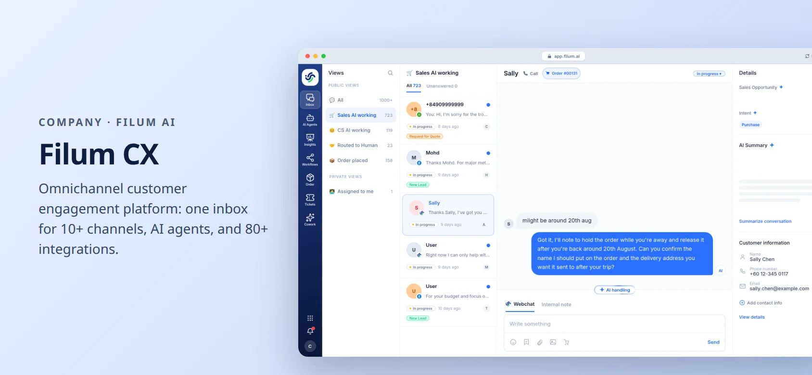

DỰ ÁN CÔNG TY · FILUM AI · 2024 — 2026
Filum CX
Nền tảng chăm sóc khách hàng đa kênh: một hộp thư cho hơn 10 kênh, AI agent và automation, cùng các quy trình hỗ trợ cho đội CSKH.
- Next.js
- Node.js
- Python
- GCP Cloud Functions
- Cloud Run
- Redis
- TanStack Query/Table
- Ant Design
Làm tại Filum AI cùng đội kỹ sư. Sản phẩm thuộc về công ty; cần tài khoản doanh nghiệp để đăng nhập.

Tóm tắt nhanh
Filum CX là sản phẩm chính của Filum AI. Doanh nghiệp dùng nó để trò chuyện với khách hàng trên mọi kênh từ một hộp thư, với AI agent và automation lo phần việc lặp lại.
Mình làm sản phẩm này hai năm trong đội kỹ sư 15 người. Mình thiết kế và làm chính lớp giám sát, đảm bảo độ tin cậy cho các tích hợp, phụ trách phần automation, và thêm tính năng cho conversation và ticket. Trang này kể lại những bài toán mình đã nhận và những gì thay đổi nhờ chúng.
Giữ cho các tích hợp kênh chạy ổn định
Filum CX hỗ trợ hơn 80 tích hợp, chạy trên Cloud Function. Khi một tích hợp kênh bị hỏng, khách hàng là người phát hiện đầu tiên. Khách báo đội CSKH, CS kiểm tra rồi chuyển cho dev, dev trace nguyên nhân, rồi câu trả lời lại đi ngược về khách.
Mình thiết kế hệ thống thay đổi quy trình đó cho hơn 10 kênh, và làm phần lớn nó.
| Loại lỗi | Trước | Sau |
|---|---|---|
| Credential hết hạn (token, đăng nhập) | Khách phát hiện. Người có kinh nghiệm mất 2–3 giờ trao đổi, người mới mất khoảng một buổi, rồi khách mới re-auth | Khách tự thấy kết nối sắp hết hạn hoặc đã hết hạn và tự re-auth, trước khi có gì bị gián đoạn |
| Hạ tầng (Cloud Function thiếu RAM, traffic tăng đột biến, API của kênh lỗi) | Mất một buổi tới một ngày để tìm nguyên nhân, sau đó phải chạy lại dữ liệu bị lỡ bằng tay cho khách | Thấy nguyên nhân ngay trong log tập trung. Tác vụ lỗi tự thử lại tối đa 3 lần, mỗi lần chờ lâu hơn lần trước; vẫn lỗi thì admin của tổ chức khách hàng được báo qua Lark hoặc thông báo trong app |
- Theo dõi credentialTheo dõi trạng thái mọi kết nối và cho khách thấy khi nào sắp hết hạn, để họ re-auth kịp lúc.
- Log tập trungLog của mọi tích hợp ở một chỗ, nên lỗi chỉ thẳng tới nguyên nhân thay vì phải trace mất nhiều giờ.
- Tự động thử lạiDữ liệu đồng bộ lỗi được xử lý lại mà không cần ai chạy tay: tối đa 3 lần, theo exponential backoff (khoảng chờ tăng gấp bội sau mỗi lần), để không dội thêm tải vào một API đang lỗi.
- Cảnh báo đúng ngườiKhi thử lại vẫn không được, super admin hoặc admin của tổ chức đó nhận thông báo qua Lark hoặc ngay trong app, thường là trước cả khi khách hàng của họ kịp nhận ra.
Lỗi khó nhất: số đếm hội thoại luôn sai
View count, tức số hội thoại trong mỗi view của hộp thư, bị sai từ trước tới giờ. Lỗi được sửa đi sửa lại, và vài hôm sau khách lại báo số bị lệch. Chưa ai tìm ra gốc rễ.
Mình lần ra nguyên nhân nằm ở cách tính: số đếm được tính ở frontend, không có nguồn dữ liệu chuẩn từ backend, nên cứ lệch dần khi hội thoại thay đổi. Vá ở frontend thì không bao giờ giữ được lâu.
Mình thêm luồng để backend gửi snapshot số đếm xuống frontend mỗi khi có thay đổi. Từ đó khách không còn báo sai view count nữa.
Automation và AI
AI trả lời comment Facebook
Dựng luồng automation để AI tự trả lời comment Facebook cho khách hàng. AI trả lời dựa trên kho kiến thức riêng của từng doanh nghiệp: chính sách, FAQ, công cụ của họ. Comment nhạy cảm thì AI không trả lời, mà đánh dấu và chuyển cho nhân viên xử lý. Trước đây phải có người trực page trả lời tay; giờ không còn comment nào bị bỏ sót.
Node Agent cho mọi workflow
Xây node Agent có thể gọi trong các luồng automation khác, biến AI agent thành một khối dựng sẵn mà khách tự ghép vào workflow của họ.
Trigger và action
Cùng xây hệ thống automation với hơn 10 trigger và hơn 10 action.
Conversation, ticket và tốc độ
SLA và attribute
Thêm SLA và thuộc tính tuỳ chỉnh cho conversation và ticket, để đội CSKH thấy việc nào sắp trễ hạn và phân loại được yêu cầu.
Lần tải đầu: từ 15 giây xuống khoảng 8 giây
Trên máy cấu hình thấp, lần mở trang đầu tiên mất tới 15 giây (các lần sau khoảng 5 giây). Mình dùng DevTools và tự bấm giờ từng lệnh gọi API để tìm chỗ nghẽn, rồi sắp xếp lại: cái nào tải trước, cái nào chờ được, cái nào chưa cần gọi cho tới khi người dùng mở phần đó. Lần tải đầu giảm xuống khoảng 8 giây.
Frontend nhẹ hơn
Lazy loading, tree shaking, ảo hoá danh sách và tối ưu render để bớt việc thừa trên trình duyệt.
10 kênh do mình tích hợp
Trong hơn 80 tích hợp mà nền tảng hỗ trợ, mình trực tiếp tích hợp 10 kênh, gồm Messenger, Zalo OA và 3CX, vào trình quản lý hội thoại chung.
Cách team làm việc
Sprint theo tuần
Mỗi sprint kéo dài một tuần, có check-in đầu ngày và check-out cuối ngày để cả team biết ai đang làm gì và vướng ở đâu.
AI ở mọi bước
Từ lúc nhận task, thiết kế tổng quan, thiết kế chi tiết, viết code, review code, review bảo mật cho tới test tính năng cơ bản, mọi bước đều có AI hỗ trợ. CTO là người merge và deploy.
Hướng dẫn intern
Mình hướng dẫn các bạn intern làm những sản phẩm phụ: trang quản trị, landing page và trang sự kiện.
Cách hoạt động
- FrontendNext.js với Ant Design, shadcn/ui và TanStack Query/Table.
- Tích hợpCác service Node.js và Python trên GCP Cloud Functions và Cloud Run, cùng Redis.
- Độ tin cậyLog tập trung, theo dõi credential, retry và cảnh báo nội bộ cho hơn 10 kênh tích hợp.
- Bảo mậtAudit bảo mật có AI hỗ trợ, trong đó tìm ra lỗ hổng làm lộ access token GCP qua API của custom tool. Đọc bài viết →
Xem trực tiếp
Mở trang trong tab mới. Cần tài khoản doanh nghiệp để đăng nhập.